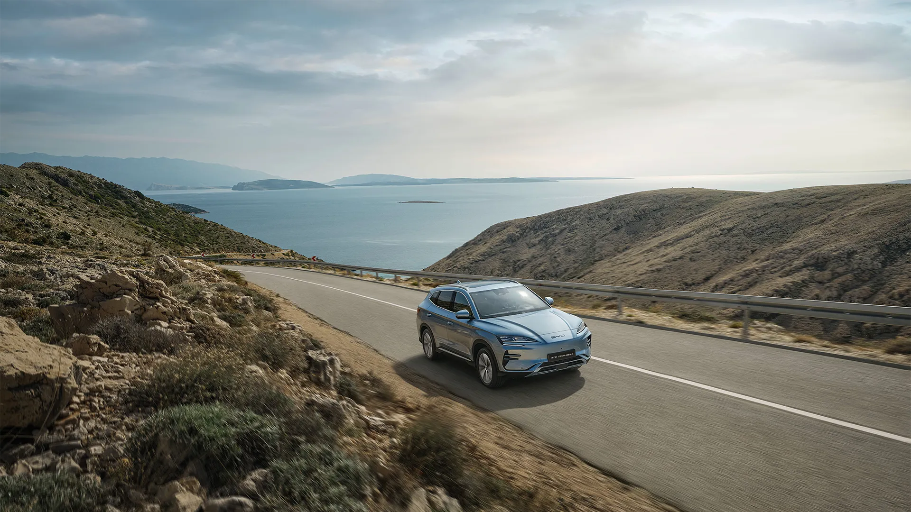
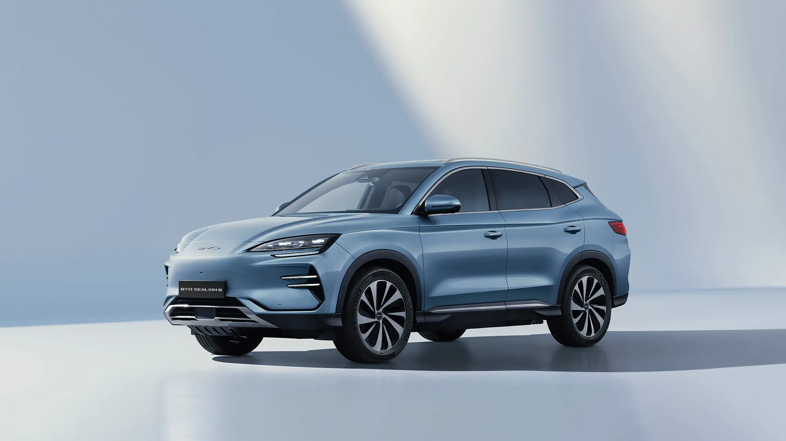
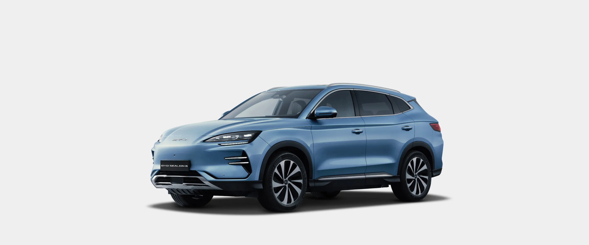
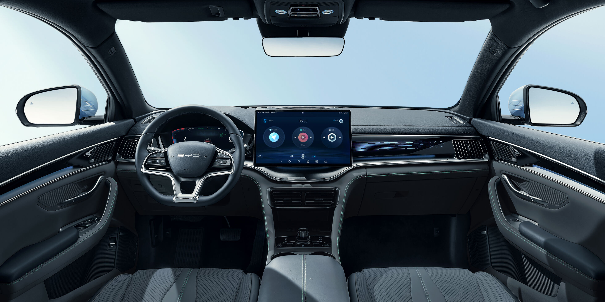
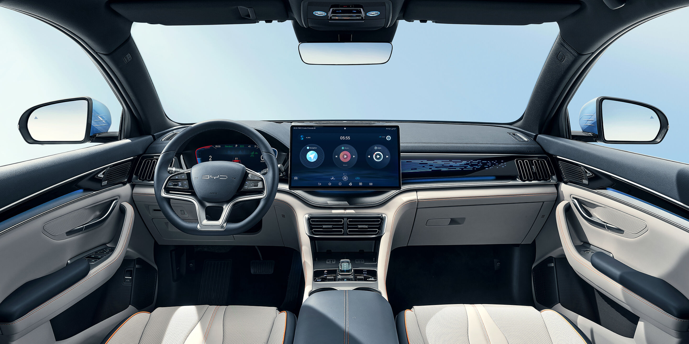
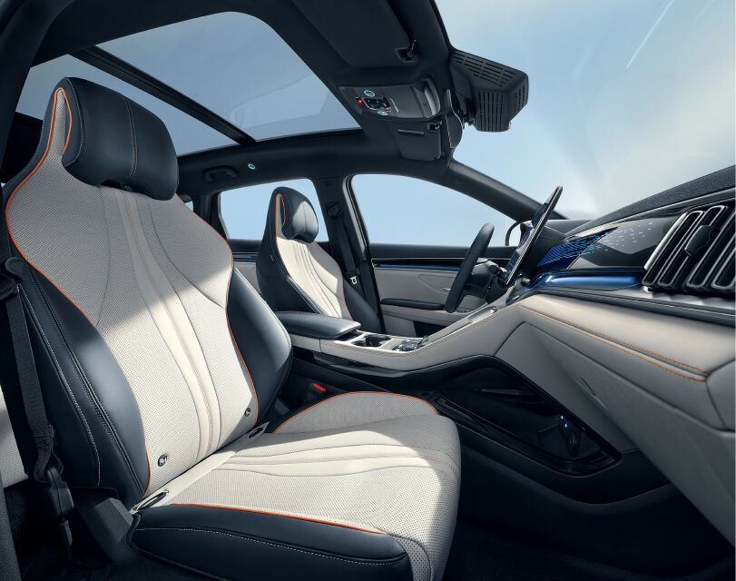

Always-in-touch rotatable screen
A large rotatable touchscreen acts as the central hub for connectivity and infotainment, with intelligent voice control and real-time information at a glance.




A large rotatable touchscreen acts as the central hub for connectivity and infotainment, with intelligent voice control and real-time information at a glance.
The expansive panoramic sunroof fills the cabin with natural light, helping passengers feel more connected to the world outside.

BYD incorporates the VCU, BMS, MCU, PDU, DC-DC controller, on-board charger, drive motor, and transmission into one system, maximising space utilisation and energy efficiency.
The advanced heat pump operates across a broad temperature range, using residual heat to reduce energy loss and improve low-temperature driving range.
